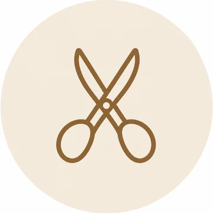
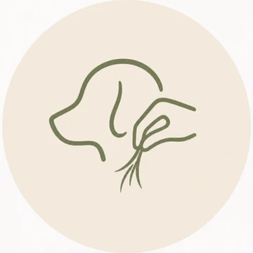
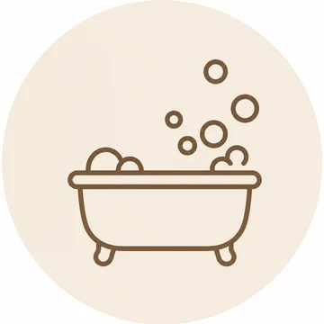
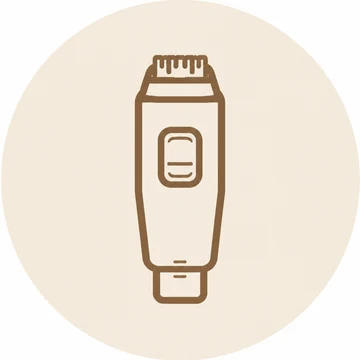
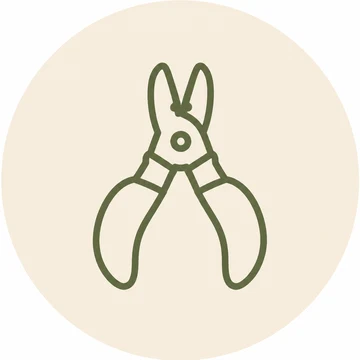
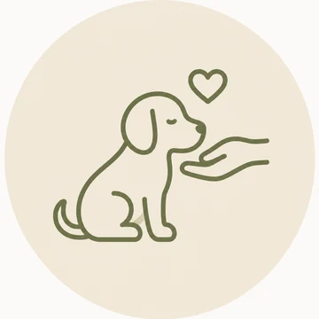
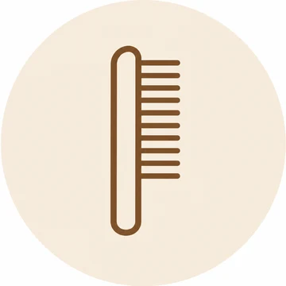
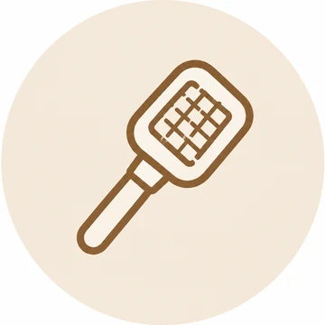

Prijzen
De prijs is afhankelijk van uw hond en uw wensen.
Bel 06-23 44 38 60 of mail hondentraining-trimsalon@vrolijkstaartje.nl voor meer informatie en om een afspraak in te plannen.
Trainen angstige hond
Trainen angstige hond in de trimsalon:
Is uw hond bang in de trimsalon of voor een bepaalde behandeling? Dan help ik u graag.
Ik heb de opleiding tot hondentrainer gevolgd waardoor ik u en uw hond kan helpen om een trimbehandeling minder eng te maken.
Voorbeelden die kunnen voorkomen in de trimsalon:
- Bang voor het wassen
- Bang voor het droogblazen van de vacht
- Bang voor borstel of kam
- Bang om nagels te knippen
- Pootjes mogen niet aangeraakt worden
Is uw hond bang voor een van deze dingen of iets anders en wilt u dit graag trainen? Neem gerust contact op. We gaan samen kijken hoe we u en uw hond kunnen helpen om een trimbehandeling weer leuk te maken.
We zoeken naar de oorzaak van de angst en stellen vervolgens een passend trainingsprogramma op. Stap voor stap oefenen we, zodat uw hond vertrouwen krijgt in de behandeling.
Ben je geïnteresseerd?
- Mail: hondentraining-trimsalon@vrolijkstaartje.nl
- WhatsApp: 06-23 44 38 60
Behandelingsinformatie

Knippen/effileren:
De vacht wordt met een schaar of effileerschaar in elk gewenst model gebracht. De honden worden geknipt volgens rassenstandaard. Mocht u liever iets anders willen, kunnen wij dit altijd bespreken.

Plukken:
Plukken is het verwijderen van de bovenste dode haarlaag. Plukken gebeurt wanneer de vacht rijp is om geplukt te worden. Dit merk je wanneer je de bovenste haarlaag zonder moeite eruit kan plukken. Hierdoor is het niet pijnlijk voor de hond. Plukken wordt ongeveer 2 tot 4 keer per jaar gedaan. De hond wordt niet gewassen om huidontstekingen te voorkomen. Mocht u toch graag uw hond gewassen willen hebben, kunnen we een aparte behandeling inplannen minimaal 1 week erna.

Wassen/drogen/ontwollen:
Om de huid zo goed mogelijk te reinigen, wordt de hond gewassen en daarna droog geblazen met een waterblazer. Dit zorgt ervoor dat uw hond weer lekker fris is. Wij hebben verschillende shampoos die goed aansluiten bij de vacht van de hond. Bij ontwollen verwijderen we de oude ondervacht. Dit wordt gedaan door de was en blaas methode toe te passen. Door eerst te wassen laten de losse haren los, doordat ze zwaar worden van het water. De kracht van de waterblazer zal daarna alle losse haren uit de vacht blazen.

Scheren:
Hierbij wordt de vacht ingekort met een tondeuse, de lengte kunt u zelf bepalen mits dit mogelijk is voor de hond.

Nagels knippen:
De nagels van uw hond worden geknipt op de juiste lengte.

Puppy gewenning:
Puppy gewenning kan vanaf 10 weken. De bedoeling van deze behandeling is dat uw hond al kan wennen aan de salon en het aanraken van uw hond. De behandeling bestaat uit: borstelen, oogjes vrij knippen, haren onder de pootjes wegknippen en het knippen van de nagels. De waterblazer wordt even aangezet zodat de pup kan wennen aan het geluid.

Ontklitten:
Wanneer uw hond klitten heeft worden deze eruit geborsteld. Dit kost extra werk en worden er extra kosten in rekening gebracht. Als de klitten te erg zijn worden ze weggeknipt of zal de hond helaas kort geschoren worden. Mocht dit nodig zijn zal dit altijd in overleg gebeuren. Het welzijn van de hond staat altijd voorop zodat de hond geen pijn zal hebben onder de behandeling!

Borstelen:
Heeft uw geen tijd om de hond goed te borstelen om klitten te voorkomen tot aan de nieuwe behandeling? Dan kan uw een borstel afspraak tussen de behandelingen door maken. Ik zal uw hond grondig borstelen zodat hij weer klitten vrij is.
Workshops
Workshop eigen hond knippen/plukken:
Wilt u graag leren om uw eigen hond te leren knippen of plukken? Dan meldt u zich aan voor de workshop eigen hond knippen/plukken. Tijdens deze workshop zal u leren hoe u uw eigen hond een trimbehandeling geeft. Tijdens deze workshop zal u zelf voor een schaar, borstel en kam moeten zorgen.
- De workshop zal met een groep van 3 à 4 personen zijn.
- Duur workshop: 5 uur
- Prijs p.p.: € 150
- Er is koffie of thee aanwezig en iets lekkers voor tussendoor.
Tijdens deze workshop behandelen we deze punten:
- Model knippen of plukken van uw hond
- Oogjes vrij knippen
- Voetjes vrij scheren of knippen
- Nagels knippen
- Borstelen en kammen, zodat de hond klitvrij is
- Welke benodigdheden u nodig heeft, denk aan shampoo, klittenspray, borstels, enz.
Mocht u graag bepaalde materialen of andere benodigdheden willen kopen, dan kan je dit bestellen bij mij.
Ben je geïnteresseerd? Meld je aan via een e-mail:
hondentraining-trimsalon@vrolijkstaartje.nl
of stuur een bericht via WhatsApp: 06-23 44 38 60
Workshop Vachtverzorging:
Wilt u graag meer leren over het borstelen of klittenvrij houden van uw hond? Dan is deze workshop iets voor u.
- Duur workshop: 90 min
- Prijs p.p.: € 70
- Deze workshop kan individueel of met meerdere personen gehouden worden.
Tijdens deze workshop behandelen we deze punten:
- Welke borstel en kam heb ik nodig voor mijn hond
- Hoe borstel of kam ik mijn hond het beste om klitten te voorkomen
- Hoe knip ik de ogen vrij van mijn hond
- Haren verwijderen tussen de poten
- Welke klittenspray kan ik gebruiken bij klitten
Mocht u geïnteresseerd zijn in materialen of andere spullen, kunt u deze bestellen bij mij.
Ben je geïnteresseerd? Meld je aan via een e-mail:
hondentraining-trimsalon@vrolijkstaartje.nl
of stuur een bericht via WhatsApp: 06-23 44 38 60
Bij het brengen van de hond wordt een tijd afgesproken. Bij uitloop wordt u geïnformeerd.
Ophalen binnen 30 minuten na klaar zijn, anders wordt er € 15 in rekening gebracht.
Door een afspraak te maken gaat u akkoord met de algemene voorwaarden.
Algemene voorwaarden
Door een afspraak te maken ga je akkoord met onze algemene voorwaarden.
1. Algemeen
1.1 Deze algemene voorwaarden zijn van toepassing op alle afspraken en diensten die worden geleverd door Trimsalon Vrolijk Staartje aan haar klanten.
1.2 Door een afspraak te maken bij onze salon, gaat de klant akkoord met deze algemene voorwaarden.
2. Afspraken en annuleringen
2.1 Een afspraak maken kan telefonisch, via e-mail, of online via de website van de trimsalon.
2.2 Annuleren of wijzigen van een afspraak kan tot 48 uur voor de afgesproken tijd kosteloos. Bij annuleringen binnen 24 uur voor de afspraak wordt er € 35 in rekening gebracht.
2.3 Bij niet opkomen voor een afspraak (no-show) wordt er € 50 in rekening gebracht.
2.4 Wij behouden ons het recht voor om een afspraak te weigeren als het huisdier of de situatie dit niet toelaat.
3. Betaling
3.1 Betaling dient na afloop van de behandeling te geschieden, tenzij anders afgesproken.
3.2 Wij accepteren betalingen via contant of pin.
3.3 Alle vermelde prijzen zijn inclusief btw. De salon behoudt zich het recht voor om tarieven aan te passen. Wijzigingen worden van tevoren gecommuniceerd.
4. Gezondheid en veiligheid van huisdieren
4.1 De klant is verplicht om de trimsalon te informeren over de gezondheid van hun huisdier (bijvoorbeeld medicatie, allergieën, medische aandoeningen of gedragsproblemen).
4.2 De trimsalon behoudt zich het recht voor om een huisdier te weigeren of de behandeling te beëindigen als het huisdier zich agressief gedraagt of een risico vormt voor de gezondheid van het huisdier of het personeel.
4.3 Indien het huisdier tijdens de behandeling gewond raakt door een onderliggende gezondheidsproblematiek die niet is gemeld, kan de trimsalon niet aansprakelijk worden gesteld.
5. Verantwoordelijkheid en aansprakelijkheid
5.1 De trimsalon is niet aansprakelijk voor schade of verwondingen die ontstaan door de normale uitvoering van de behandeling, tenzij dit te wijten is aan opzet of grove nalatigheid.
5.2 Eventuele schade aan het huisdier kan worden besproken, maar vaak is de salon niet aansprakelijk voor incidenten die buiten haar controle liggen.
5.3 De trimsalon is niet aansprakelijk voor verlies van eigendommen van de klant (zoals halsbanden of andere accessoires).
6. Huisregels
6.1 De klant is verantwoordelijk voor het gedrag van hun huisdier tijdens de behandeling.
6.2 Indien een huisdier agressief is of niet te hanteren is, kan de trimsalon besluiten de behandeling te stoppen.
6.3 De klant dient het huisdier op tijd af te leveren en op te halen. Indien dit niet gebeurt, kunnen extra kosten in rekening worden gebracht voor opvang of vertraging.
6.4 Klanten worden verzocht om hun huisdier niet met open wonden of een besmettelijke aandoening naar de salon te brengen.
7. Producten en behandelingen
7.1 De trimsalon gebruikt kwaliteitsproducten die veilig zijn voor uw huisdier. Als de klant specifieke voorkeuren heeft voor producten, kan dit vooraf worden aangegeven.
7.2 De trimsalon biedt verschillende behandelingen aan. De prijs en duur van de behandeling worden vooraf met de klant besproken.
7.3 De klant kan verzoeken om een bepaalde stijl of behandeling, maar de trimsalon garandeert niet altijd het gewenste resultaat door factoren zoals het gedrag van het huisdier of de conditie van de vacht.
8. Privacy en gegevens
8.1 De trimsalon verwerkt persoonlijke gegevens van klanten in overeenstemming met de privacywetgeving.
8.2 Gegevens worden uitsluitend gebruikt voor het uitvoeren van de diensten en voor administratieve doeleinden, en zullen niet zonder toestemming van de klant worden gedeeld met derden.
9. Wijzigingen
9.1 Deze algemene voorwaarden kunnen zonder voorafgaande kennisgeving worden aangepast. De meest recente versie is altijd beschikbaar op onze website of kan op verzoek worden verstrekt.
Ondertekening
Door een afspraak te maken, verklaart de klant deze algemene voorwaarden te hebben gelezen en ermee akkoord te gaan.